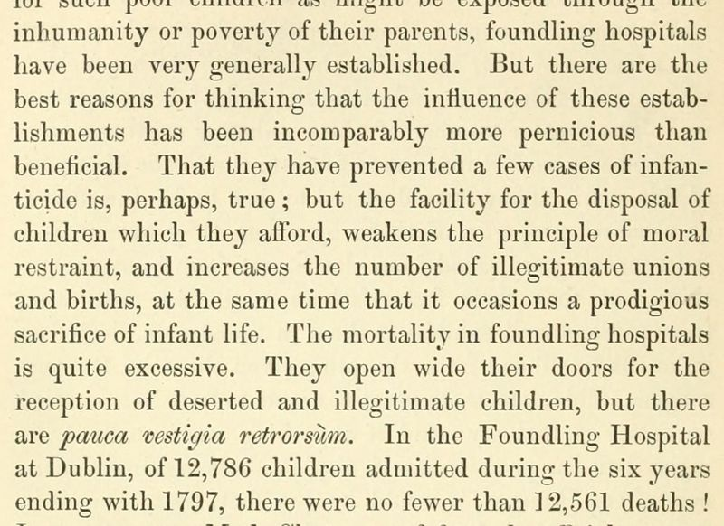
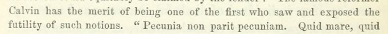
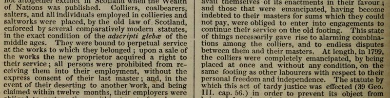

The Dublin Foundling Hospital (Principles, part I, ch. VIII, p. 246)
English: 1849, p. 246, scan n273.

… foundling hospitals have been very generally established. But there are the best reasons for thinking that the influence of these establishments has been incomparably more pernicious than beneficial. That they have prevented a few cases of infanticide is, perhaps, true; but the facility for the disposal of children which they afford, weakens the principle of moral restraint, and increases the number of illegitimate unions and births, at the same time that it occasions a prodigious sacrifice of infant life. The mortality in foundling hospitals is quite excessive. They open wide their doors for the reception of deserted and illegitimate children, but there are pauca vestigia retrorsum. In the Foundling Hospital at Dublin, of 12,786 children admitted during the six years ending with 1797, there were no fewer than 12,561 deaths!
Lecky’s note 14 reproduces both figures exactly (“between 1792 and 1797”, M’Culloch’s “six years ending with 1797”). M’Culloch goes on to Madrid in 1817, after “M. de Chateauneuf”.
Calvin: “Pecunia non parit pecuniam”? (Principles, part III, ch. VIII, pp. 566–567)
English and Latin: 1849, pp. 566–567, scans n593–n594, in the chapter on the rate of interest.

The famous reformer Calvin has the merit of being one of the first who saw and exposed the futility of such notions. “Pecunia non parit pecuniam. Quid mare, quid domus, ex cujus locatione pensionem percipio? An ex tectis et parietibus argentum proprie nascitur? Sed et terra producit, et mari advehitur quod pecuniam deinde producat, et habitationis commoditas cum certa pecunia …” [p. 567] “… e loco, sed tantum ex æquitatis regula.”—Calvini Epistolæ, quoted by Stewart in the notes to his “Preliminary Dissertation” to the “Encyclopædia Britannica.”
The Latin runs: “‘Money does not breed money.’ What of the sea, what of a house, from whose letting I draw a rent? Does silver properly grow out of roofs and walls? But the land produces, and the sea brings in, what then produces money, and the convenience of a dwelling [is exchanged] for a fixed sum …” (this edition’s draft). Lecky’s note 49 sends the reader to “a remarkable passage in one of [Calvin’s] letters quoted by M’Culloch, Pol. Econ., pt. iii. ch. viii.”: the part and chapter fit, and M’Culloch himself credits Dugald Stewart. The middle of the quotation (end of p. 566, start of p. 567) is in the OCR only.
Scotland’s bound colliers (Wealth of Nations, ed. M’Culloch, note to book III, ch. II)
English: Edinburgh 1838, p. 172, footnote (begun on p. 171), scan n239. Lecky cites the 1828 edition, vol. II, p. 186.

The best account ever published of the influence of slavery over national wealth and civilisation … will be found in the third volume of the Cours d’Economie Politique of M. Storch, Paris, 1823. The species of slavery, alluded to in the text, was not altogether extinct in Scotland when the Wealth of Nations was published. Colliers, coalbearers, salters, and all individuals employed in collieries and saltworks were placed, by the old law of Scotland, enforced by several comparatively modern statutes, in the exact condition of the adscripti glebæ of the middle ages. They were bound to perpetual service at the works to which they belonged; upon a sale of the works the new proprietor acquired a right to their service; all persons were prohibited from receiving them into their employment, without the express consent of their last master; and, in the event of their deserting to another work, and being claimed within twelve months, their employers were obliged to restore them within twenty-four hours, under a high penalty! Such was the state of the Scotch colliers, &c. so late as 1775 … At length, in 1799, the colliers were completely emancipated …
Lecky’s note 20 follows the highlighted words closely. The note opens by recommending Storch’s Cours d’économie politique, which Lecky also cites (see the Storch page). The first sentences, on p. 171, and the end of the note are from the OCR.
The repeal of 1663 (Wealth of Nations, Introductory Discourse)
Lecky’s note 169 says that “the restrictive laws on this subject [the export of the precious metals] were repealed in 1663 (M’Culloch’s Introd. Discourse)”. The discourse prefixed to the 1838 edition says (OCR only): “at length, in 1663, the statutes prohibiting the exportation of foreign coin and bullion were repealed, and leave given to the East India Company, and to private traders, to export them in unlimited” quantities. Lecky’s note 168 refers in general to M’Culloch’s Political Economy and this Introduction.
Backlinks
Every place in Rationalism in Europe that links to this page (generated automatically when the site is built).